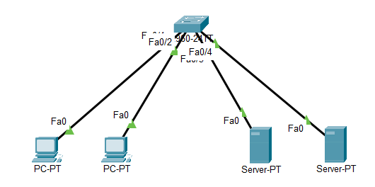

VLAN op 1 switch
In deze oefening configureer je één switch met twee gescheiden VLAN's. Alle toestellen hangen aan diezelfde switch.
Download het startbestand en open het in Cisco Packet Tracer.

Stap 1: VLAN's aanmaken en poorten toewijzen
- VLAN 10, voor de clients: poort 1 en poort 2
- VLAN 20, voor de servers: poort 3 en poort 4
Stap 2: IP-adressen instellen
Geef elk toestel een statisch IP-adres.
| Toestel | IP-adres | Subnetmasker |
|---|---|---|
| Client0 | 192.168.1.10 | 255.255.255.0 |
| Client1 | 192.168.1.11 | 255.255.255.0 |
| Server0 | 192.168.1.12 | 255.255.255.0 |
| Server1 | 192.168.1.13 | 255.255.255.0 |
Let op de subnetten
De vier toestellen zitten in hetzelfde IP-subnet, maar in twee verschillende VLAN's. Een client kan dus wel de andere client pingen en niet de servers, ook al lijken hun adressen bij elkaar te horen. Het VLAN scheidt op laag 2, los van het IP-adres dat je instelt.
Controleren
Ben je klaar, klik dan op Check Results in het venster van de oefening.